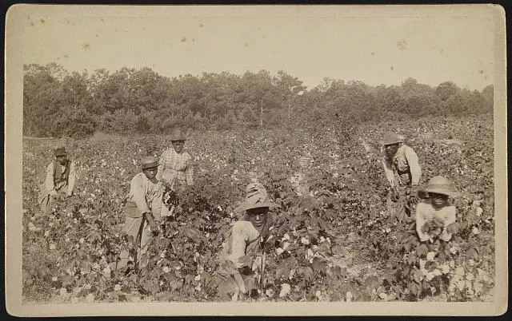
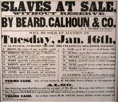

An examination of one of America's darkest institutions — its origins, its brutality, its resistance, and its lasting legacy.
The history of slavery in America begins in 1619, when the first enslaved Africans were brought to the English colony of Virginia. Initially, some Africans arrived under contracts similar to indentured servitude. However, by the mid-17th century, colonial legislatures began passing laws that codified slavery as a permanent, race-based institution.
The transatlantic slave trade was one of the largest forced migrations in human history. Between the 16th and 19th centuries, an estimated 12 to 12.5 million Africans were shipped to the Americas under horrific conditions. Roughly 400,000 of them arrived in what would become the United States.
Slavery was systematically encoded into American law. The slave codes denied enslaved people the right to own property, marry legally, testify in court, or learn to read. The U.S. Constitution's Three-Fifths Compromise (1787) counted enslaved people as three-fifths of a person for congressional representation — ensuring slave states wielded outsized political power.
Enslaved people were forced to labor under brutal conditions, primarily on plantations growing tobacco, rice, indigo, and — after the invention of the cotton gin in 1793 — cotton. The cotton economy of the Deep South depended almost entirely on enslaved labor, making the institution deeply entangled with American economic prosperity.
"I appear before the immense assembly this evening as a thief and a robber. I stole this head, these limbs, this body from my master, and ran off with them."
— Frederick Douglass, 1847
Enslaved people endured physical violence, family separation, sexual exploitation, and psychological degradation. Families were deliberately torn apart through slave auctions. The domestic slave trade — trading enslaved people between Southern states — separated an estimated one million families between 1820 and 1860.


Enslaved people were never passive victims. They resisted in countless ways — from subtle acts like breaking tools and feigning illness, to organized rebellions and escape. Their resistance was a constant source of fear for slaveholders and a testament to the enduring human will for freedom.
The abolitionist movement grew steadily through the early 19th century, with figures like Frederick Douglass, Sojourner Truth, and William Lloyd Garrison demanding an immediate end to slavery. Their newspapers, speeches, and pamphlets shifted public opinion in the North.
When Abraham Lincoln was elected president in 1860, Southern states began seceding from the Union, fearing the restriction of slavery. The resulting Civil War (1861–1865) became the bloodiest conflict in American history, with slavery at its core.
On January 1, 1863, Lincoln issued the Emancipation Proclamation, declaring enslaved people in Confederate states to be free. It was a turning point — transforming the war's purpose and allowing Black men to enlist in the Union Army. The war ended in April 1865 with Confederate surrender.
The 13th Amendment, ratified on December 6, 1865, formally abolished slavery throughout the United States — though freedom was far from complete, as the era of Reconstruction and Jim Crow would soon demonstrate.
Slavery's end did not bring equality. The Black Codes and later Jim Crow laws enforced racial segregation and disenfranchisement for nearly a century. Systemic racism — in housing, education, employment, and criminal justice — continues to reflect the unresolved consequences of 246 years of slavery.
The legacy of slavery is visible in the racial wealth gap, mass incarceration, and ongoing civil rights struggles. Movements like the Civil Rights Movement of the 1950s–60s and Black Lives Matter in the 21st century are direct responses to an incomplete reckoning with this history.
Understanding this history is not about guilt — it is about truth, accountability, and building a more just society. As Frederick Douglass said: "Knowledge makes a man unfit to be a slave."